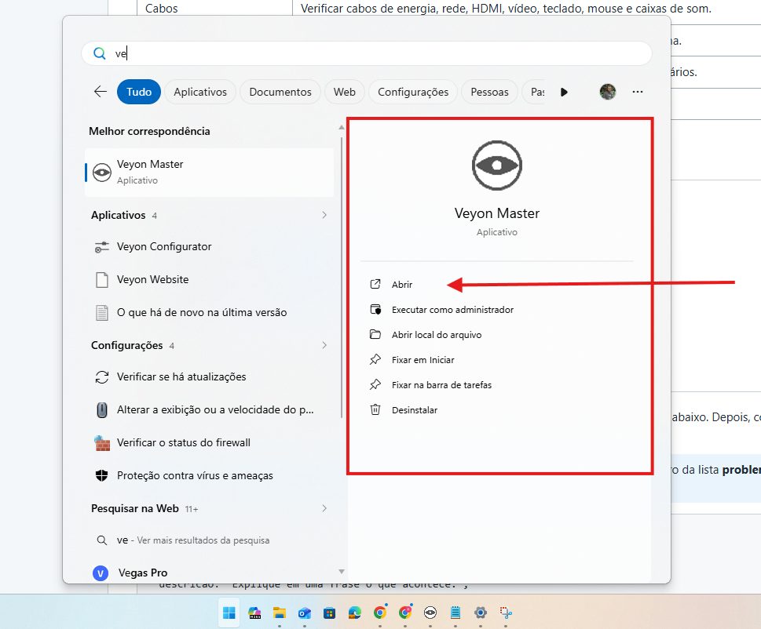
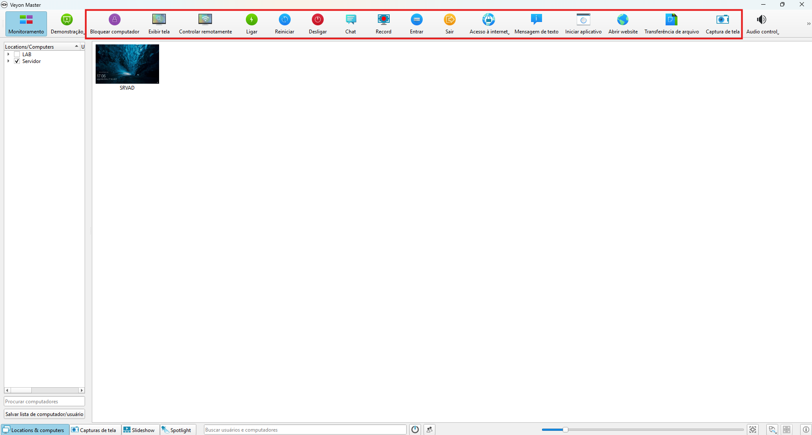

Como visualizar a tela dos alunos pelo Veyon
Página de solução — Monitoramento e sala de aula
Como resolver
- No computador do instrutor, abrir o menu Iniciar do Windows.
- Pesquisar por Veyon Master.
- Clicar em Abrir para iniciar o aplicativo.
- Aguardar o carregamento dos computadores ligados no laboratório.
- Usar a visualização principal para acompanhar as telas dos alunos em tempo real.
- Para abrir um site em vários computadores ao mesmo tempo, usar a função de acesso à internet/abrir página do Veyon e informar o endereço desejado.
- Usar a função de desligar apenas quando realmente for encerrar o uso dos computadores, pois ela pode desligar as máquinas dos alunos em conjunto.
- Antes de desligar os computadores, confirmar se os alunos salvaram seus arquivos e finalizaram as atividades.
Observações
- O Veyon deve ser usado pelo instrutor responsável como ferramenta de acompanhamento e organização da aula.
- A função de visualização ajuda a identificar se os alunos estão acompanhando a atividade proposta.
- A função para abrir um site em todos os computadores é útil quando a turma precisa acessar a mesma página ao mesmo tempo.
- A função de desligar deve ser usada com cuidado, preferencialmente ao final da aula ou quando houver orientação para encerrar os computadores.
Ilustração do processo
Use as imagens abaixo como referência visual. Elas estão organizadas na ordem do procedimento.

Pesquise por Veyon Master no menu Iniciar e clique em Abrir.

Use a tela principal do Veyon para visualizar os computadores dos alunos e acessar funções como abrir site para todos e desligar máquinas.
Quando chamar suporte
Acionar suporte se o Veyon Master não abrir, se os computadores dos alunos não aparecerem na lista ou se os comandos não forem aplicados às máquinas ligadas.
Dica: se o problema continuar, anote o equipamento, a sala, o horário e tire uma foto da mensagem exibida na tela.